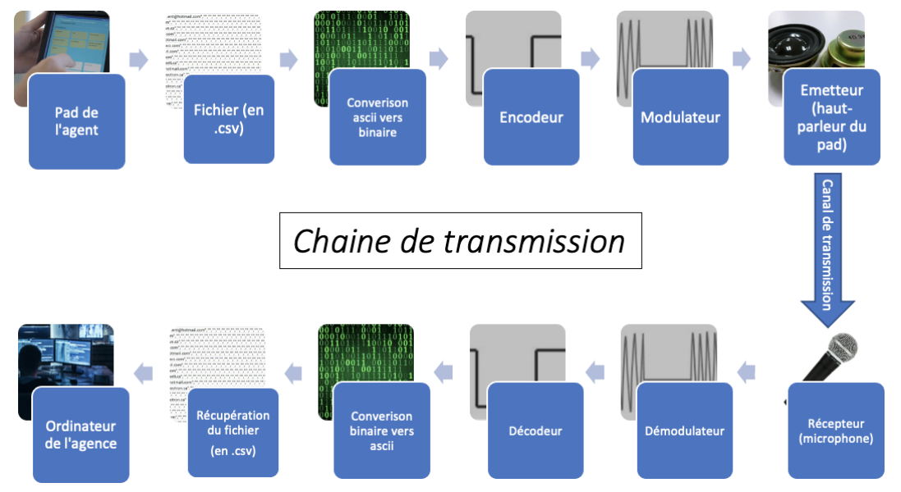
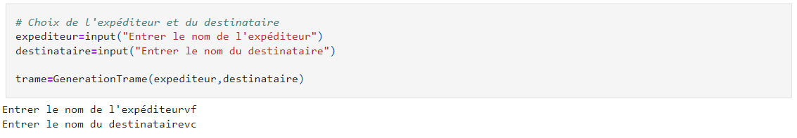
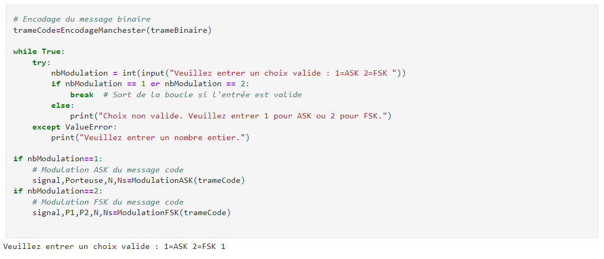
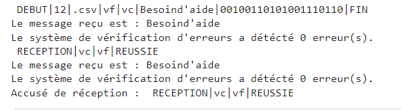

Python
Traitement du Signal
ASK / FSK
Simulateur de Modulation ASK et FSK en Python
Développement d'un simulateur illustrant le processus de modulation d'amplitude (ASK) et de fréquence (FSK) en Python. L'objectif est de démontrer comment un message texte est encodé, modulé et transmis via une chaîne numérique avant d'être démodulé et décodé.
Architecture de la chaîne
- Encodage : Conversion de texte en ASCII puis en signal binaire.
- Modulation : Application des techniques ASK et FSK.
- Réception : Démodulation et décodage pour reconstituer le message.
- Analyse comparative des performances ASK vs FSK.
// DÉPÔT DU PROJET
Code Python
Explorez les algorithmes de modulation et démodulation sur GitHub.
01 // ARCHITECTURE
Chaîne de transmission
Processus complet depuis l'encodage jusqu'à la réception via un canal simulé.

02 // ROUTAGE
Destinataire et Démodulation
Sélection de l'expéditeur et du destinataire et extraction du message d'origine.

03 // PARAMÉTRAGE
Choix de la modulation (ASK / FSK)
Sélection entre Amplitude Shift Keying (ASK) et Frequency Shift Keying (FSK).

04 // RÉSULTATS
Signal modulé et réception
Visualisation des résultats obtenus après modulation, transmission et décodage.
